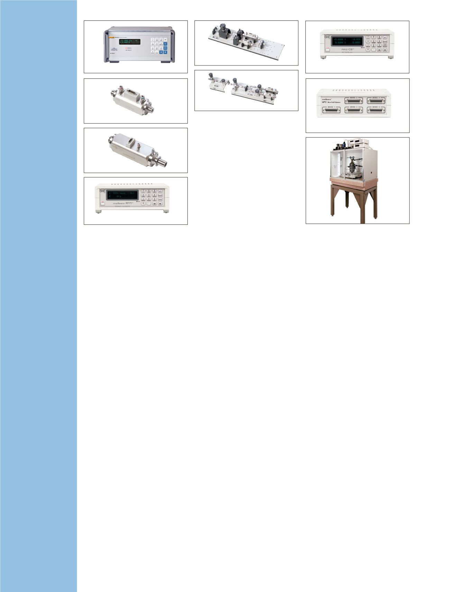

Produkt-Highlights
MET/TEAM
®
– Software für die Mess-
und Prüfmittelverwaltung
Die MET/TEAM
™
-Software ist eine leistungsfähige,
flexible und an Ihre Anforderungen anpassbare
Lösung zur Verwaltung Ihrer Kalibratoren und
Normale. Die Software wurde von Metrologie-
Experten entwickelt und ist ideal für die Steuerung
und Verwaltung der Arbeitsabläufe im Kalibrierlabor.
•
Browserbasierte Software für einfachen, aber
sicheren Zugriff auf Daten
•
Reichhaltiger Funktionsumfang zum Verfolgen und
Verwalten von Beständen
•
Vollständig integriert mit der Laufzeitfunktion der
marktführenden Kalibriersoftware MET/CAL
®
•
Empfohlener Nachfolger von MET/TRACK als
Datenbank-Engine für MET/CAL
•
Nutzung der verbreiteten Microsoft® SQL Server-
Datenbank für eine zuverlässige, kostengünstige,
nicht proprietäre Datenspeicherung
•
Verwaltung der Arbeitsabläufe
•
Vielfältig anpassbare Felder und Bezeichnungen
•
Verknüpfungen für eine einfache Navigation
•
Unterstützt Prozesse innerhalb
Qualitätsmanagement und Akkreditierung
•
Benutzerdefinierbare Berichte mit Crystal Reports
Professional
•
Automatisierte E-Mail-Warnungen und
Erinnerungsfunktion
•
Mobile-Modul für die Kalibrierung vor Ort
•
Webportal für Kunden ermöglicht das Lesen von
Daten durch Fernzugriff
•
Modul für betriebswirtschaftliche Aufgaben
wie Preiskalkulation, Rechnungserstellung und
Vertragsgestaltung
•
Von Experten für Experten entwickelt
•
Entwickelt und unterstützt von Fluke Calibration,
dem Spezialisten für Kalibratoren und
Kalibriersoftware
•
Erfassen und Speichern von Daten aus manuellen
Kalibrierungen
Kalibriermanagementsoftware
MET/CAL
®
Plus
Die MET/CAL
Plus
-Software automatisiert den
Kalibrierprozess, damit Sie Ihre Arbeit effizienter
und konsistenter verwalten können. Die MET/CAL-
Anwendungsplattform enthält die branchenführende
Lösung für die automatisierte Kalibrierung MET/CAL
und die MET/TEAM-Software zur Bestandsverwaltung.
Die MET/CAL
Plus
-Software bietet Ihnen Werkzeuge
für folgende Aufgaben:
•
Ausführen automatisierter Kalibrierungen
für alle Arten von Prüf- und Messmitteln,
einschließlich Gleichspannungs-, NF-, HF- und
Mikrowelleninstrumenten
•
Schnelles und einfaches Erstellen, Bearbeiten,
Testen und Dokumentieren von Kalibrierprozeduren
•
Einstellung und Ausgabe einer größeren Bandbreite
an Messunsicherheitsparametern und Einbindung
von Überprüfungsdaten, um Nachweisbarkeit zu
bieten und weitere Analysen zu unterstützen
•
Nachverfolgung von Messmitteldaten einschließlich
Kalibrierung und Wartungshistorie und -status,
Rückführbarkeit, Anwender, Kunden und Standort
•
Analysieren und Protokollieren von
Geräteinformationen; Drucken angepasster
Zertifikate und Berichte.
•
Freigeben von Daten für andere Firmensysteme
•
Importieren von Geräte- und Kalibrierdaten in die
MET/CAL
Plus
-Software
•
Helfen bei der Erfüllung der Anforderungen
von Qualitäts- und Akkreditierungsnormen wie
EN ISO 9000, EN ISO 17025, NRC 10 CFR
oder Z540.3
40
Kalibriersoftware